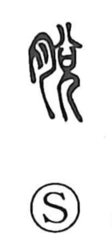

脱

Uncategorized
Kun: nugu, nugeru | On: datsu
to take off ・ to shed ・ to slip out ・ to escape
Explanation
脱 is a phono-semantic character whose original form is 脫, built on 兌 as its phonetic. In the ancient graphs 兌 shows the light descent of divine breath, marked by the sign 八, upon a shaman figure (兄), depicting a trance-like, slackened state under possession; the related character 悦 captures that inner state of mind. From this idea of loosening and depletion, adding the flesh sign 月 (the “meat/flesh” element) turns the scene to the body: what is slackened is bodily substance, so things drop away or slip free. Hence 脱 comes to mean to come off or fall out, to slip out or get free (escape), and by extension to take off clothing, as in 脱衣.